# Preliminary experiments on the hyperelastic composite materials with holes and inclusions
Date: 2019/03/28
Author: V. Slesarenko
## Summary of the experiments
I printed several specimens with designs that are based on some numerical and theoretical works. The dimensions of each specimen are provided in the corresponding pictures. The out-of-plane thickness is **2.5mm**, notch width is **0.5mm**. Please, note that at this stage I didn't aim for very accurate experiments, so all experimental results are very preliminary and almost no postprocessing were performed.
## Design 1 (DENT)
Two homogeneous DENT specimens with notch lengths 3.6 and 7.2 mm. Green area -- soft TangoPlus (TP) material, red -- stiff material (in this case just to fix specimen in the tensile jigs). This design is adopted from the papers _"Stochastic analysis of polymer composites rupture at large deformations modeled by a phase field method"_ (Fig 5) and _"Fracture problems of rubbers: J-integral estimation based upon η factors and an investigation on the strain energy density distribution as a local criterion"_.
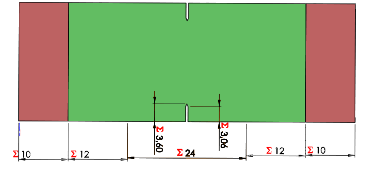
Force-Disp curves demonstrate expected behavior of homogeneous DENT specimens (I also checked this on larger specimens). Videos below are sped up.
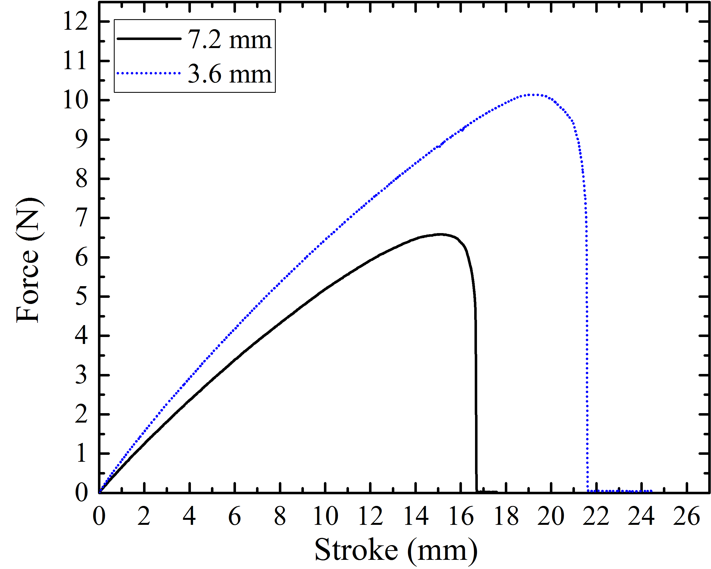
## Design 2 (Three rigid inclusions)
This design with three rigid inclusions corresponds to the scaled design from Figure 6 in the paper _"Stochastic"_. The inclusions with diameter 10.46mm are made of stiff VW material. The notch length is 2.64mm
 Video demonstrates that the failure occurs in soft matrix between inclusions
Digital image correlation (DIC) allows me to find that the maximal strains ($\varepsilon_{xx}$) is observed between inclusions as shown below
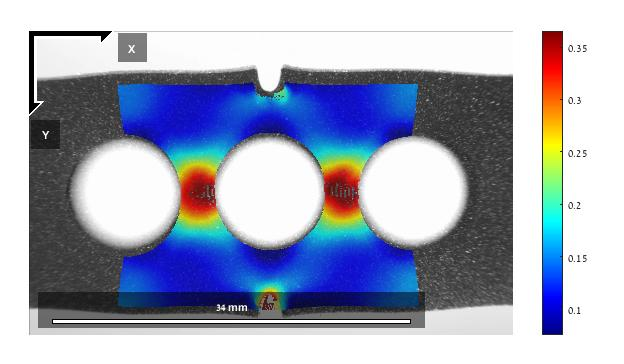
## Design 3 (Two holes)
This design is based on the following picture
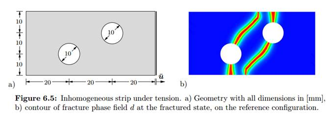
The dimensions are scaled down and the final diameter and distances from the edges equal to 8mm as shown below. I also tried designs with initial notches and without them.
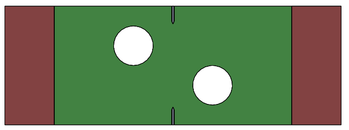
Videos below show the failure of these specimens
As one may see, these specimens can withstand large elongation and the failure in the specimen without notch occurs in the locations corresponding to the numerical predictions. At the same time, due to the high distortion of the speckle pattern and optical aberration of the camera lens, DIC is hard to perform on these specimens. However, to illustrate $\varepsilon_{xx}$ strain field I attached DIC image below.
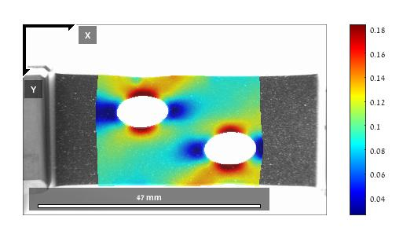
## Design 4 (DENT specimen with randomly distributed stiff inclusions)
In the final design I just placed about 50 rigid inclusions (diameter of 1.5mm) in hyperelastic DENT specimen with the same dimensions as in the Design 1 (the notch length here is 6 mm).
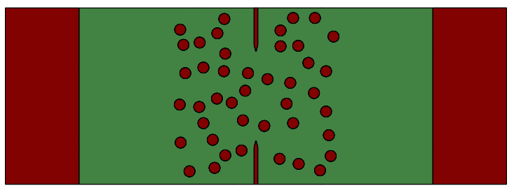
The coordinates of the inclusions relative to the central point are in [this file](datafiles/DENT_w24_v6_coords.txt)
The video of the experiment shows that the inclusions obviously affect crack propagation, however it is hard to quantitatively describe their contribution for now.
## Comment regarding materials
The materials I am using for the printing are stiff VeroWhite and soft TangoPlus (TangoBlackPlus). VeroWhite has a Young's modulus around 2 GPa and for this work can be treated as rigid body. TangoPlus is hyperelastic nearly incompressible material (can be treated as neo-Hookean) with shear modulus 0.2 MPa. The critical elongation is around 200-300%, but it significanlty depends on the strain rate, loading conditions and other factors. Therefore, in my opinion, the discrepancy between simulations and experiments will originate here. There were a lot attempts to accurately address the complexity of TangoPlus behavior by many researchers, but all of them more or less failed.
FYI, it is possible to print with soft digital materials which are stiffer than TangoPlus, but since they are basically mix between TangoPlus and VeroWhite with different mass ratios, their behavior is even more complicated.
## Comment regarding experimental issues
These are issues that I faced during my experiments.
1. The distortion of the camera. Since we utilize the focus extender to zoom and change FOV, the aberrations are visible near the frame edges, which is not good for DIC;
2. I need to improve our approach to obtain better speckle patterns if we want to go with DIC.
## My questions
These are the questions we need to discuss before going further.
1. What we want to demonstrate experimentally in long term perspective? Please, select 2-3 possible directions.
2. I used specimens with thickness of 2.5mm. Is it adequate from your point of view?
3. How are we going to validate material models to match experiments with numerical simulations? This is especially important considering very involved behavior of these materials.
Video demonstrates that the failure occurs in soft matrix between inclusions
Digital image correlation (DIC) allows me to find that the maximal strains ($\varepsilon_{xx}$) is observed between inclusions as shown below
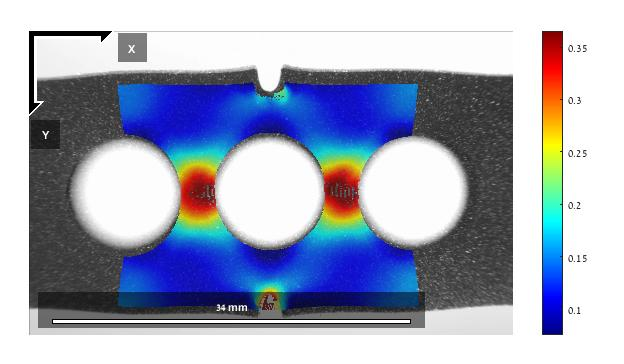
## Design 3 (Two holes)
This design is based on the following picture
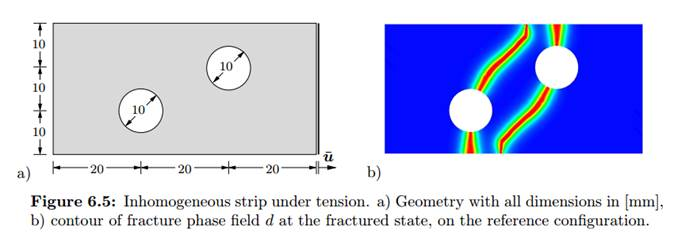
The dimensions are scaled down and the final diameter and distances from the edges equal to 8mm as shown below. I also tried designs with initial notches and without them.
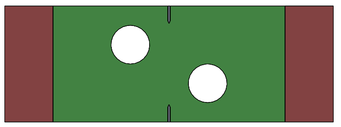
Videos below show the failure of these specimens
As one may see, these specimens can withstand large elongation and the failure in the specimen without notch occurs in the locations corresponding to the numerical predictions. At the same time, due to the high distortion of the speckle pattern and optical aberration of the camera lens, DIC is hard to perform on these specimens. However, to illustrate $\varepsilon_{xx}$ strain field I attached DIC image below.
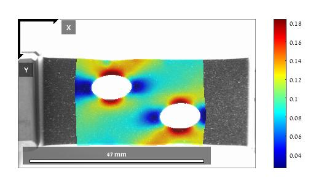
## Design 4 (DENT specimen with randomly distributed stiff inclusions)
In the final design I just placed about 50 rigid inclusions (diameter of 1.5mm) in hyperelastic DENT specimen with the same dimensions as in the Design 1 (the notch length here is 6 mm).
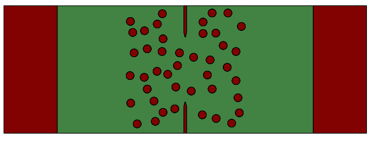
The coordinates of the inclusions relative to the central point are in [this file](datafiles/DENT_w24_v6_coords.txt)
The video of the experiment shows that the inclusions obviously affect crack propagation, however it is hard to quantitatively describe their contribution for now.
## Comment regarding materials
The materials I am using for the printing are stiff VeroWhite and soft TangoPlus (TangoBlackPlus). VeroWhite has a Young's modulus around 2 GPa and for this work can be treated as rigid body. TangoPlus is hyperelastic nearly incompressible material (can be treated as neo-Hookean) with shear modulus 0.2 MPa. The critical elongation is around 200-300%, but it significanlty depends on the strain rate, loading conditions and other factors. Therefore, in my opinion, the discrepancy between simulations and experiments will originate here. There were a lot attempts to accurately address the complexity of TangoPlus behavior by many researchers, but all of them more or less failed.
FYI, it is possible to print with soft digital materials which are stiffer than TangoPlus, but since they are basically mix between TangoPlus and VeroWhite with different mass ratios, their behavior is even more complicated.
## Comment regarding experimental issues
These are issues that I faced during my experiments.
1. The distortion of the camera. Since we utilize the focus extender to zoom and change FOV, the aberrations are visible near the frame edges, which is not good for DIC;
2. I need to improve our approach to obtain better speckle patterns if we want to go with DIC.
## My questions
These are the questions we need to discuss before going further.
1. What we want to demonstrate experimentally in long term perspective? Please, select 2-3 possible directions.
2. I used specimens with thickness of 2.5mm. Is it adequate from your point of view?
3. How are we going to validate material models to match experiments with numerical simulations? This is especially important considering very involved behavior of these materials.